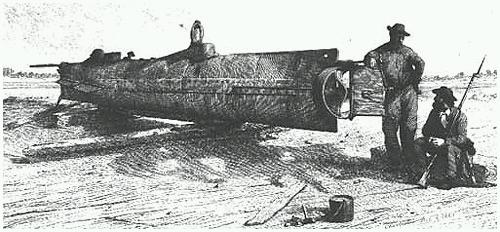
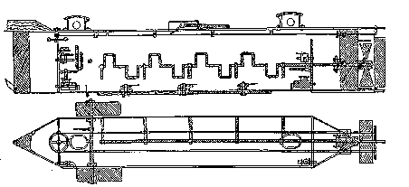
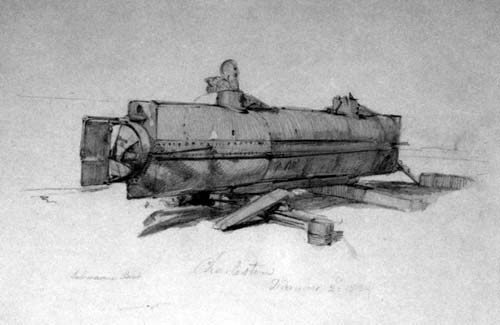

Команда лейтенанта Диксона.
Сто тридцать девять лет прошло после той ночи, но до сих пор
люди ломают головы, что же все-таки случилось на Чарльстонском рейде
17-го февраля 1864 года. Казалось бы фактов, рассказов очевидцев - немало.
Еще больше логических выкладок, расчетов, попыток воссоздать события.
Ну и конечно масса домыслов и легенд. Тем не менее историки ни на йоту
не приблизились к истине. Напротив, вновь обнаруженный фактический
материал ставит новые загадки, не отвечая на старые.
Многие наверное догадались, что речь пойдет о подводной лодке "Ханли".
Итак, старые, не подлежащие сомнению факты. В тот вечер эта субмарина
конфедератского флота под командованием 24-х летнего лейтенанта Джорджа
Диксона атаковала корабль северян, новенький корвет "Хаусатоник".
Атака была успешной, вражеский корабль затонул. Просигналив на берег
об успехе операции, лодка отправилась назад, на базу, но бесследно исчезла
по дороге домой и судьба ее была загадкой вплоть до 2000 года.
Выдвигались разные версии. Наиболее правдоподобным казалось предположение,
что лодка была повреждена взрывом собственной мины. Все бы хорошо, да
как объяснить поданный на берег сигнал успеха? Согласно договоренности,
после атаки лодка должна была подать световой сигнал. Синий свет означал
успех, красный - какие-то проблемы. Сигнал был "синим". Другая версия -
"Ханли" столкнулась с одним из судов, спешивших на выручку тонущему
"Хаусатонику". Третий вариант - лодка всплыла и двигалась на поверхности
с открытым люком, но была перевернута волной. Чтобы доказать или отвергнуть
эти теории требовалось немного - найти "Ханли", поднять со дна морского
и осмотреть на предмет повреждений или открытых люков. Но найти лодку
не удавалось. По крайней мере, ее не было вблизи того места, где произошла
атака.
Вот другие факты, не столь бесспорные. Еще до той ночи 17 февраля "Ханли"
тонула дважды и погубила в общей сложности 16 человек. Не вполне понятны
причины - разные источники противоречат друг другу. По одним сведениям обе
аварии случились во время испытаний, причем лодка действительно была
перевернута волной. По другой версии - лодка тонула во время боевых действий,
и точно называются корабли противника.
Командир "Ханли" лейтенант Диксон несмотря на свою молодость имел за
плечами большой боевой опыт, неоднократно попадал в опасные ситуации,
но всегда выходил из них победителем. Друзья за глаза называли его
счастливчиком. Рассказывали что в сражении у местечка Шилоу в лейтенанта
попала пуля, но ударилась о монетку, лежащую в кармане, и отскочила.
Военные специалисты, впрочем, не особо верят в такие чудеса. Со временем
история эта обогатилась романтическими подробностями, столь ценимыми
на американском юге. Монета, якобы, была из чистого золота и являлась
талисманом ее владельца, подарком любимой девушки.
Но вернемся к фактам. Чарльстонская бухта, образованная слиянием двух
рек Купер и Эшли хоть и огромна по размерам, но мелководна в горловине.
Судоходным является только строго определенный узкий фарватер. С юга
этот фарватер охраняется фортом Самтер, что стоит на крошечном скалистом
островке. С севера - фортом Моултри, что на Сэлливановом острове. Вот
сюда-то летом 1863 года и было переправлено новейшее секретное оружие
южан - подводная лодка "Ханли", названная так по имени своего конструктора.
Построенная в Алабаме, она была доставлена в Чарльстон (Южная Каролина) на
двух железнодорожных платформах. В целях конспирации транспортировка
осуществлялась по ночам.
Лодка имела стальной клепаный корпус длиной двенадцать метров, шириной
один метр и высотой метр с четвертью. В носовой и кормовой части находились
две башенки диаметром около полуметра с иллюминаторами. В них же были
устроены люки. Экипаж лодки - девять человек. Командир стоял в носовой
части таким образом, что голова его находилась в передней башенке. Он
осуществлял управление рулями, в том числе рулями глубины, находящимися
по бортам. Для погружения и всплытия использовались заполняемые водой
балластные цистерны. Их также две - одна в корме и одна в носу. Заполнялись
эти цистерны путем открытия забортного клапана, а осушались с помощью ручного
насоса. Носовой цистерной управлял командир, кормовой - первый помощник.
Конечно, заполнение и продувка обеих цистерн должны были проводиться
одновременно, иначе лодка опрокинулась бы на нос или на корму. Кроме того,
для экстренного всплытия использовался отсоединяемый груз из литого чугуна.
Стоит командиру потянуть за нужный рычаг как груз сброшен, и лодка будто
поплавок, выскакивает на поверхность. Из навигационных приборов - только
компас, практически бесполезный внутри железного корпуса. А вот второй
прибор очень важен. Это зажженная свечка, которая свидетельствовала о том,
что в лодке достаточно кислорода. Если свечка гаснет нужно немедленно
всплывать. Кроме того - это источник внутреннего освещения. В надводном
положении судно вентилировалось специальными воздухозаборниками. Для
подводного плавания имелся баллон со сжатым воздухом.
Все члены экипажа за исключением командира были заняты лишь только тем, что
вращали гребной винт с помощью специальных рукояток и сообщали кораблю
скорость около трех узлов.

Атака на вражеское судно могла осуществляться двумя способами - торпедой
или миной. Торпеда, обтекаемый плавучий снаряд, крепилась к лодке с помощью
длинного тросса. И в то время, когда лодка двигалась под водой, торпеда
плыла по поверхности. Стоит пройти под днищем вражеского корабля и плывущая
следом торпеда ударит его в борт. Этот метод имел недостаток.
Легко промахнуться, учитывая, что лодка в подводном положении практически
слепа. К тому же торпеду видно издалека и враг может успеть выполнить
маневр, уклониться от столкновения.
Минная атака в этом отношении лучше. Заряд управляемый электрическим
сигналом, устанавливался на длинном шесте в носовой части. Нужно только
подплыть вплотную к вражескому кораблю, коснуться миной его корпуса и
нажать кнопку. Здесь тоже усматривается недостаток - лодка должна всплыть
в последний момент перед атакой и обнаружить себя прямо под носом у
противника.
Месяцы были потрачены для тренировки экипажа. Отрабатывались
все мыслимые ситуации, которые могли сложиться в боевой обстановке.
Несколько раз командир провел интересный эксперимент, результатом
которого гордился. Точно удалось выяснить, как долго экипаж может дышать
тем воздухом, запас которого имелся в баллоне. "Ханли" уходила под воду и
ложилась на дно. Оказалось, что можно было продержаться, не всплывая, два
с половиной часа, пока не гасла сигнальная свечка.
И вот 17-го февраля 1864 года наступил звездный час лейтенанта Диксона
и его храброго экипажа. Целью стал только что построенный корвет
"Хаусатоник" прибывший на помощь северянам и ставший на якорь в прямо
в фарватере. Место стоянки выбрали так, что корабль оказался вне досягаемости
береговой артиллерии, но напрочь перекрыл сообщение Чарльстона с внешним
миром.
Итак, в 15:40 прилив достиг наивысшей точки и вскоре уровень воды у
побережья пошел на убыль. В такие часы в городской бухте возникает
течение, направленное в океан. Течение постепенно нарастало и должно
было достигнуть наибольшей силы к 7 часам вечера. "Ханли" отчалила
от Сэлливанова острова как раз в это время. Все было рассчитано.
Течение должно было помочь добраться до вражеского корабля. А потом,
около десяти вечера, опять начнется прилив, который поможет вернуться
обратно. В качестве оружия выбрали мину на шесте.
Прошел один час и сорок пять минут после отплытия. "Глядите, кит!" -
крикнул кто-то на борту корвета, указывая на темную массу, поднимающуюся
из глубины в ореоле фосфоресцирующей воды.
Ошибку поняли слишком поздно, когда в бурлящей пене обозначился
покрытый заклепками металлический корпус, блеснули в лунном свете зловещие
глазницы иллюминаторов.
По лодке открыли беспорядочную стрельбу из ружей, но что толку?
Пули отскакивали от стальной обшивки как горошины. Пушку использовать
не смогли ибо для этого потребовалось бы опустить ствол вниз, чего
не позволяли технические средства. В последние секунды корабль пытался
сняться с якоря и совершить маневр, но поздно! Мина уперлась в борт
корвета как раз в том месте, где находился пороховой погреб. Красное
зарево рванулось над Чарльстонским рейдом и в отблесках пожара
разваливающегося на куски корабля, "Ханли" дала "полный назад" и с шипением
исчезла в пучине.
Двадцать минут спустя на том месте, где стоял "Хаусатоник" плавала куча
обломков и барахтающихся людей.
В 21:30, то есть почти через час после атаки над водой блеснул синий
огонек, вызвавший овацию на позициях южан. Сигнал этот означал только
одно - "Возвращаюсь с победой. Ханли".
Однако прошел час, другой, наступило хмурое зимнее утро, а с ним и
отрезвление от успеха. "Ханли" не вернулась. Она исчезла в Чарльстонской
бухте, унеся с собой "счастливого" лейтенанта и весь его маленький
экипаж.
***
Поиски лодки начались спустя более чем сто лет, в 1974, году и велись
около двух десятилетий. Ну не чудо ли? К тому времени уже нашли
"Титаник" в центре Атлантики на огромной глубине. А "Ханли", пропавшая
практически на глазах, где-то совсем у берега все еще не находилась.
Наконец в конце девяностых удалось обнаружить магнитную аномалию
на дне Чарльстонской бухты и подводные раскопки подтвердили, что
лодка наконец найдена. Она лежала на глубине всего десяти метров,
покрытая слоем ила, менее чем в полумиле от того места где произошло
сражение.
Операция по подъему субмарины, выполненная в 2000 году - отдельная история,
тоже интересная, но не об этом сейчас речь. Можно лишь упомянуть что обошлось
это мероприятие в 17 миллионов долларов, из которых три выделило
правительство Южной Каролины, два - Пентагон, а остальные двенадцать
миллионов собирались по крохам из добровольных пожертвований.
Лодку подняли, уложив ее предварительно в мягкую пенопластовую коробочку,
доставили в специально построенную для нее лабораторию, где и поместили
в бассейн с морской водой, чтобы избежать влияния резкой смены среды.
Постепенно воду откачали, следя за состоянием корпуса и вот, наконец,
первые исследователи проникли внутрь. Они рассчитывали на быструю разгадку
причин гибели лодки, но вместо этого обнаружили целый букет новых тайн.
"Ханли" не была повреждена ни взрывом ни столкновением с другим кораблем.
Люки были закрыты. Нормальное, исправное состояние. Выяснили, что в
последний момент выполнялись какие-то манипуляции с одной балластной
цистерной. Очередная загадка. Почему работали только с одной цистерной,
а не с двумя, как это подсказывает логика? Было ли это всплытие или
погружение? Кроме того, появились основания думать, что какие-то
действия проводились и с передним люком.
Останки погибших людей хорошо сохранились, но о чудо! Стало ясно, что
в лодке только 8 человек. Куда же делся девятый? Неужели спасся?
Ответа нет, но, думается, даже если кому-то удалось выскочить в последний
момент с тонущего корабля, шансов у него не было никаких. Ночь, февральская
холодная вода, до берега четыре мили.
Расположение костей погибших тоже удивило. Исследователи ожидали найти
их около люков, ведь во время затопления лодки люди пытались бы вырваться
наружу. Но нет! Все погибли на своих обычных местах. Неужели смерть их
была столь стремительна, что они ничего не успели понять? Что могло
случиться? Положение только одного человека наводило на мысль, что он
пытался спастись.
Нашли также фонарь, тот самый, сигналы которого видели на берегу. Эта
находка, кстати, окончательно поставила крест на одной из гипотез.
Версия была такая. Известно, что Джордж Диксон был бесконечно предан
своему кораблю и ни на секунду не сомневался в успехе. Все мыслимые и
немыслимые трудности были предусмотрены и отработаны на тренировках.
И вдруг после атаки выясняется, что лодка терпит аварию и возможно
погибнет. Не мог командир подать сигнал беды, ибо это было бы бесчестием.
Чтобы подбодрить товарищей на берегу, он просигналил об успехе.
Версия слабенькая. Ну представьте, тонущая лодка смогла всплыть и
даже открыть люк для сигнала. Гораздо логичнее предположить, что
начнут спасать людей. Вместо этого неизвестный сигнальщик спускается
обратно и задраивает люк. Мало того, он заботливо уносит с собой и
фонарь!
Неожиданностью для ученых стало обнаружение бронзового медальона
у одного из членов команды. Медальон был "северного", то есть вражеского
происхождения. И сразу возникает новая версия. На лодке был
замаскировавшийся враг! Раньше он тихо шпионил, но после успеха операции
он осознал, сколь грозным оружием располагает противник и решился
на отчаянный поступок. Утопил лодку ценой своей жизни. Возможно?
Да, в истории немало подобных случаев, но только фактами все это не
подтверждается. Во первых, как можно голыми руками пустить ко дну исправный
железный корабль? И почему нет следов борьбы, неизбежной в данной ситуации?
А вот еще одна версия, и она очень похожа на правду. После успешной
атаки "Ханли" отправляется домой. Но какова обстановка? В стане врага
царит паника и смятение. На помощь тонущему корвету спешат спасательные
суда. Синий сигнал фонаря наверняка замечен не только своими, но и
противником. И как знать, быть может возмездие уже приближается. Люди
смертельно устали от многочасовой работы, и нервного стресса. В этой
ситуации командир принимает замечательное решение. Погрузиться и
лечь на дно. Да! Как это делалось на тренировках. Можно отдохнуть
два часа, переждать суматоху и к тому же дождаться приливного
течения, максимум которого ожидается около полуночи. Течение вынесет
лодку прямиком к родному берегу, не требуя особой работы экипажа.
И "Ханли" ложится на дно. Наступает гробовая тишина. Внутри лодки царит
темнота, едва оживляемая сигнальной свечкой. Впервые за долгие часы
люди бросили ненавистные рычаги и склонили головы на натруженные руки...
Они заснули! И никто не заметил, как от недостатка кислорода
погасла свечка. И вскоре все умерли во сне.
Жуткая версия. Так это или нет, ясно одно - люди погибли в результате
роковой, мелочи, страшной своей нелепостью.
***
Когда я готовил эту статью, я невольно представлял себя на месте тех
людей и вдруг у меня сложилась собственная версия, причем все разрозненные,
необъяснимые детали вдруг, как по волшебству, сложились воедино.
Ну, во-первых, об исчезновении девятого члена экипажа. А откуда
известно, что он вообще существовал? Да, команда была из девяти человек,
но ведь возможен вариант, что кто-то заболел, умер, струсил в последний
момент и сбежал. Команда была отлично обучена и вряд ли командир взял бы
на борт замену из посторонних. Новичок был бы опасен своей
некомпетентностью.
По поводу случившегося, я согласен с последней версией об уснувшем
экипаже, но с дополнением, объясняющим некоторые загадочные детали.
Представьте, экипаж уснул. Погасла сигнальная свечка. И вдруг кто-то
из матросов приходит в себя. (Вспомним, один человек, похоже, пытался
спастись, в то время, когда остальные находились на своих местах).
Он пытается разбудить товарищей, но тщетно! Они либо без сознания,
либо мертвы. Тогда он бросается к балластной цистерне и пытается откачать
из нее воду. (В последний момент что-то делали с балластной цистерной).
Но он - простой матрос, он не знает, как справиться с насосом. Да и нельзя
этого делать, ибо лодка опрокинется. Этого он тоже не знает. С насосом
ничего не выходит. Тогда в отчаянии он решается открыть люк.
(Что-то делали с люком). Быть может удастся выскочить. А остальные -
они все равно уже не проснутся. Но на глубине 10 метров крышка прижата
давлением в две тонны. Я специально посчитал. Этот несчастный человек
так и погиб там, у люка, не зная того, что можно было б дернуть за рычаг
аварийного всплытия и отсоединить чугунный груз под днищем.
Вот такая гипотеза. А правда и по сей день покрыта мраком. Но хочется
верить, что истина когда-нибудь выяснится. Сейчас на "Ханли" работает
множество людей - историки, археологи, криминалисты, генетики.
Миллиметр за миллиметром они тщательно исследуют каждую мелочь.
Есть вопросы и более общие. Согласно официальной американской
истории Север в гражданскую войну был технически и экономически
развит, а Юг - аграрен и отстал. Но каким образом, скажите мне, именно
на Юге была построена подводная лодка, опередившая лет на пятьдесят
технологический уровень своего времени? Мало того, "Ханли" была
не одна. Южане располагали целым подводным флотом из четырех кораблей.
***
Истерика случилась с молодой сотрудницей лаборатории "Ханли" во
время очередного исследования скопившегося в лодке ила. Засунув руку
в жидкую грязь она вдруг нащупала и извлекла какой-то небольшой
предмет. Это была изогнутая золотая монета, с черной свинцовой
отметиной. На обратной стороне монеты обнаружилась гравировка:
"Шилоу, 6-e Апреля, 1862.
Моей жизни Спаситель.
Дж. Е. Д.".
Похороны "счастливого" лейтенанта Диксона и его команды пройдут
весной 2004 года на Чарльстонском кладбище "Магнолия".

(C) *** JES 2002 *** Ю. Шимановский
http://shymanovsky.mooo.com
Назад|На главную